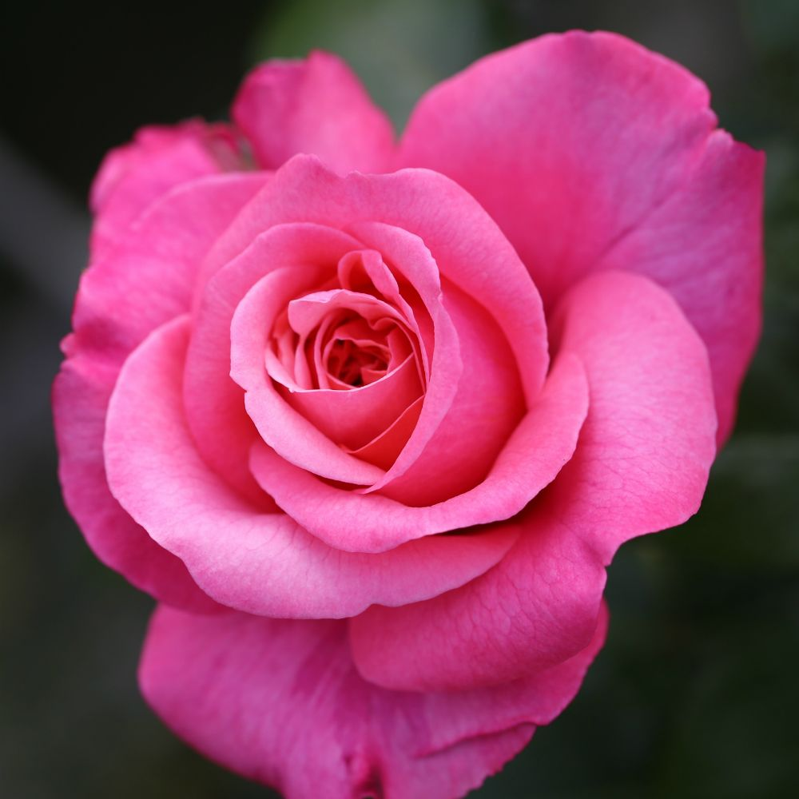
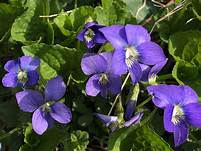

How flowers got their name
| FLOWER NAME | FLOWER IMAGE | DESCRIPTION |
|---|---|---|
| Rose |  | From Latin rosa which has a uncertain origin but is probably from Greek rhodon |
| Violet |  | From the latin word Viola from the same definition the color word developed from the flower name |
| Marigold | A fifteenth century word simply combining mary(in refernce to the virgan) and the color gold | |
| Tulip |  | Traces to the Turkish word tulbent meaning "turban", because the flower was thought to resemble one |